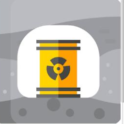
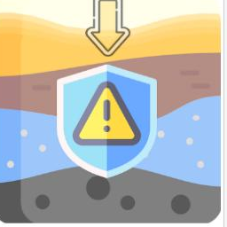

陳尚潁
Shang-Ying Chen, Ph.D.
國立成功大學 資源工程學系 助理教授
Assistant Professor, Department of Resources Engineering, National Cheng Kung University
主持 地下資源與智慧計算研究室，歡迎碩、博士生與大學部專題生加入
- 辦公室
- 資源新館四樓 43408
- 電話
- 06-2757575 分機 62835
- shangying@gs.ncku.edu.tw
研究領域
Research Areas以不確定性量化、資料同化與物理資訊神經網路，發展地下系統的數值模擬與預測方法。

地熱能源
Geothermal Energy

地下儲氫
Underground Hydrogen Storage

放射性廢棄物處置
Radioactive Waste Disposal

二氧化碳地質封存
CO₂ Geological Storage

地下資源開發
Subsurface Resources

地質災害與工程安全
Geohazards & Engineering Safety